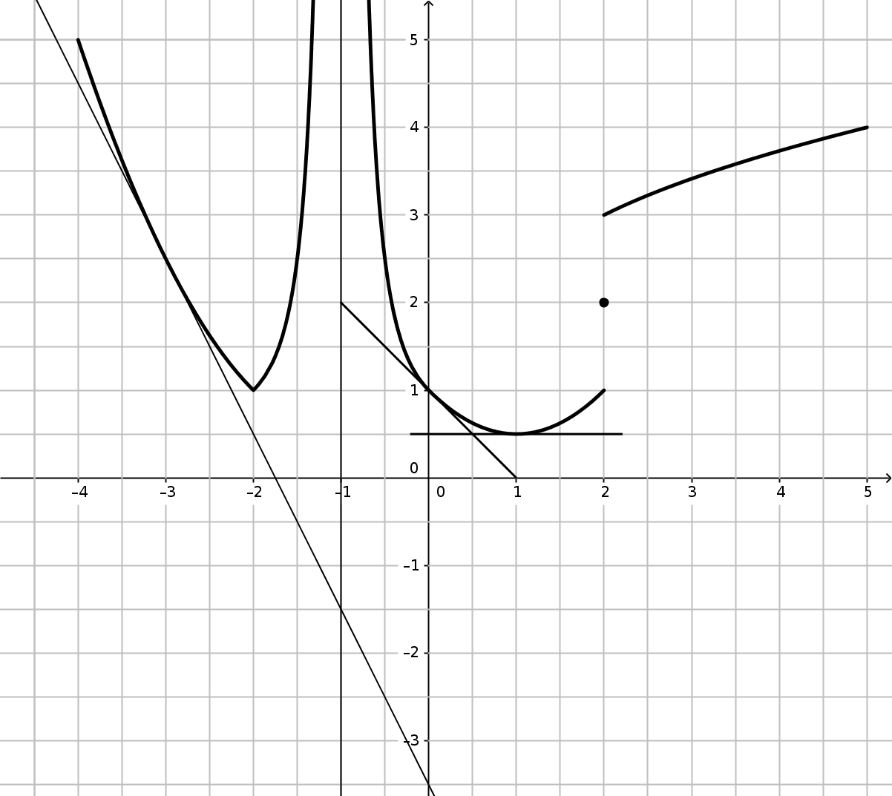

Lecture graphique (6 points)
Soit une fonction \(f\) représentée ci-dessous sur l'intervalle \(\left[-4 ; 5 \right]\). On a tracé
plusieurs de ses tangentes et une asymptote verticale. Toutes les
réponses seront données à partir de lectures graphiques.

Donner le tableau de variation de \(f\) sur \(\left[-4 ; 5 \right]\).
\(x\)
-4
-2
-1
1
2
5
\(f\)
5-
\(+\infty\)
1- 2 3+
4-
↘
↗
↘
↗
↗
1
0,5
Pour quelle(s) valeur(s) de \(x\) , \(f\) n'est-elle pas continue ? Expliquer.
\(f\) n'est pas continue en \(x=-1\) (présence d'une asymptote verticale) et en \(x=2\), où l'on
a \(\displaystyle\lim_{2^-}f=1\) ; \(f(2)=1\) et \(\displaystyle\lim_{2^+}f=3\).
À l'aide des trois tangentes tracées, donner les valeurs des nombres dérivés :
\(f'(0)\) , \(f'(1)\) et \(f'(-3)\) ; Expliquer ou illustrer sur la figure.
Tangente en \(x=-3\) :
De \(x=-4\) à \(x=-2\), soit \(\Delta x=2\), on voit que \(y\) va de \(4{,}5\) à
\(0{,}5\), soit \(\Delta y=-4\) ; on a donc \(f'(-3)=\dfrac{\Delta y}{\Delta x}=-2\).
Tangente en \(x=0\) :
De \(x=-1\) à \(x=1\), soit \(\Delta x=2\), on voit que \(y\) va de \(2\) à \(0\), soit
\(\Delta y=-2\) ; on a donc \(f'(-3)=\dfrac{\Delta y}{\Delta x}=-1\).
Tangente en \(x=1\) :
Cette tangente est clairement horizontale, donc \(f'(1)=0\).
Donner les équations de ces tangentes.
Tangente en \(x=-3\) : \(y=-2x-3{,}5\)
Tangente en \(x=0\) : \(y=-x+1\)
Tangente en \(x=1\) : \(y=0{,}5\)
Dérivées (3 points)
Calculer les dérivées des fonctions suivantes (factoriser au maximum) :
Étudier les variations de la fonction définie sur \(\mathbb{R}\) par \(g(x)=2x^3-3x^2-1\).
On
précisera les valeurs maximales et/ou minimales dans le tableau ainsi que les limites.
Montrer que l'équation \(g(x)=0\) admet une unique solution \(\alpha\in\mathbb{R}\)
La fonction \(g\) étant continue sur \(\mathbb{R}\) (car c'est un polynôme), et est
strictement croissante sur \(\left[1;+\infty\right[\) tout en vérifiant \(g(1)=-2<0\)
et
\(\displaystyle \lim_{+\infty}g=+\infty>0\) , elle atteint une image 0 en un unique
\(\alpha\in\left[1;+\infty\right[\).
De plus, comme \(g\) est majorée par \(-1<0\) sur
\(\left]-\infty;1\right]\), \(\alpha\) est l'unique solution de \(g(x)=0\) sur
\(\mathbb{R}\).
En déduire le tableau de signe de \(g(x)\) sur \(\mathbb{R}\).
cf la dernière ligne sur le tableau de variation précédent.
On étudie la fonction \(f\) définie sur \(\mathbb{R}^+=\left[0;+\infty\right[\). par
\(f(x)=\dfrac{1-x}{x^3+1}\).
En déduire les variations de \(f\) sur \(\mathbb{R}^+\).
\(f'(x)\) est du signe de \(g(x)\) car son dénominateur est un carré (donc est
positif).
\(f(0)=\frac{1-0}{1+0^3}=1\)
\(x\)
0
\(\alpha\)
\(+\infty\)
\(f'(x)\)
-
0
+
\(f\)
1
\(0^-\)
↘
↗
\(f(\alpha)\)
Récurrence (5 points)
On note \(H_n\) la propriété définie sur \(n\in\mathbb{N}\) par :
\(H_n : \displaystyle\sum_{k=0}^n k(k+1) = \dfrac{n(n+1)(n+2)}{3}\)
Démontrer par récurrence sur \(n\) que \(H_n\) est toujours vraie.
initialisation(pour n=0) :
à gauche : \(\displaystyle\sum_{k=0}^0 k(k+1) = 0\) et à droite : \(\dfrac{0(0+1)(0+2)}{3}=0\)
donc l'égalité \(H_0\) est vérifiée pour n=0.
Hérédité :
Considérons \(H_n\) vraie pour un rang \(n\) et démontrons \(H_{n+1} :
\displaystyle\sum_{k=0}^{n+1} k(k+1) = \dfrac{(n+1)(n+2)(n+3)}{3}\) :
On a \(H_n\) vraie donc :
\(\begin{array}{rcl}
\displaystyle\sum_{k=0}^{n+1} k(k+1) &=& \displaystyle\sum_{k=0}^{n} k(k+1) + (n+1)(n+2) \\
&=& \dfrac{n(n+1)(n+2)}{3} + (n+1)(n+2)\times\dfrac{3}{3} \\
&=& \dfrac{n(n+1)(n+2)+3(n+1)(n+2)}{3} \\
&=& \dfrac{(n+1)(n+2)(n+3)}{3} \\
\end{array}\)
Donc \(H_{n+1}\) est vraie.
Conclusion : \(H_n\) est toujours vraie.
cf script python pour calculer n'importe quelle somme
polynomiale.